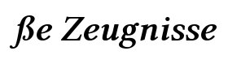

Hallo Sie sind eingeloggt in sze Version
3.0.0
als:
(
Abmelden
)
Administration
Konfiguration
Zeugnisse
Abmelden
Hier wird die eigentlich Seite angezeigt.
Erläuterung:
Ein erläuternder Text.
Ein Teil der Icons stammen von
Yusuke Kamiyamane/Pinvoke
bzw. wurden aus diesen zusammengestellt.